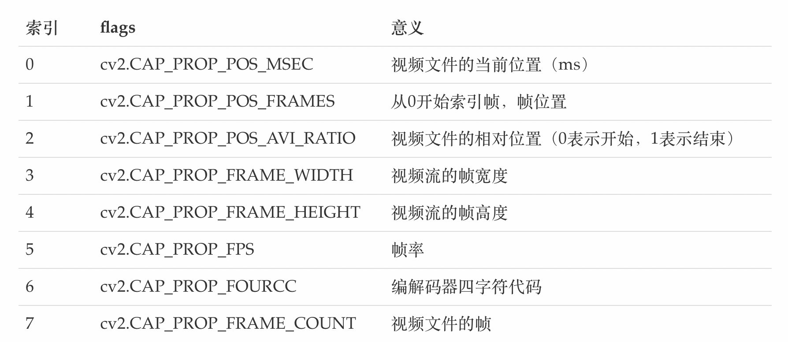

视频读写
学习目标
- 掌握读取视频文件，显示视频，保存视频文件的方法
1 从文件中读取视频并播放
在OpenCV中我们要获取一个视频，需要创建一个VideoCapture对象，指定你要读取的视频文件：
创建读取视频的对象
cap = cv.VideoCapture(filepath)参数：
- filepath: 视频文件路径
视频的属性信息
2.1. 获取视频的某些属性，
retval = cap.get(propId)参数：
propId: 从0到18的数字，每个数字表示视频的属性
常用属性有：

2.2 修改视频的属性信息
cap.set(propId，value)参数：
- proid: 属性的索引，与上面的表格相对应
- value: 修改后的属性值
判断图像是否读取成功
isornot = cap.isOpened()- 若读取成功则返回true，否则返回False
获取视频的一帧图像
ret, frame = cap.read()参数：
- ret: 若获取成功返回True，获取失败，返回False
- Frame: 获取到的某一帧的图像
调用cv.imshow()显示图像，在显示图像时使用cv.waitkey()设置适当的持续时间，如果太低视频会播放的非常快，如果太高就会播放的非常慢，通常情况下我们设置25ms就可以了。
最后，调用cap.realease()将视频释放掉
示例：
import numpy as np
import cv2 as cv
# 1.获取视频对象
cap = cv.VideoCapture('DOG.wmv')
# 2.判断是否读取成功
while(cap.isOpened()):
# 3.获取每一帧图像
ret, frame = cap.read()
# 4. 获取成功显示图像
if ret == True:
cv.imshow('frame',frame)
# 5.每一帧间隔为25ms
if cv.waitKey(25) & 0xFF == ord('q'):
break
# 6.释放视频对象
cap.release()
cv.destoryAllwindows()
2 保存视频
在OpenCV中我们保存视频使用的是VedioWriter对象，在其中指定输出文件的名称，如下所示：
- 创建视频写入的对象
out = cv2.VideoWriter(filename,fourcc, fps, frameSize)
参数：
- filename：视频保存的位置
- fourcc：指定视频编解码器的4字节代码
- fps：帧率
frameSize：帧大小
设置视频的编解码器，如下所示，
retval = cv2.VideoWriter_fourcc( c1, c2, c3, c4 )参数：
c1,c2,c3,c4: 是视频编解码器的4字节代码，在fourcc.org中找到可用代码列表，与平台紧密相关，常用的有：
在Windows中：DIVX（.avi）
在OS中：MJPG（.mp4），DIVX（.avi），X264（.mkv）。
利用cap.read()获取视频中的每一帧图像，并使用out.write()将某一帧图像写入视频中。
使用cap.release()和out.release()释放资源。
示例：
import cv2 as cv
import numpy as np
# 1. 读取视频
cap = cv.VideoCapture("DOG.wmv")
# 2. 获取图像的属性（宽和高，）,并将其转换为整数
frame_width = int(cap.get(3))
frame_height = int(cap.get(4))
# 3. 创建保存视频的对象，设置编码格式，帧率，图像的宽高等
out = cv.VideoWriter('outpy.avi',cv.VideoWriter_fourcc('M','J','P','G'), 10, (frame_width,frame_height))
while(True):
# 4.获取视频中的每一帧图像
ret, frame = cap.read()
if ret == True:
# 5.将每一帧图像写入到输出文件中
out.write(frame)
else:
break
# 6.释放资源
cap.release()
out.release()
cv.destroyAllWindows()
总结
读取视频：
读取视频：cap = cv.VideoCapture()
判断读取成功：cap.isOpened()
读取每一帧图像：ret,frame = cap.read()
获取属性：cap.get(proid)
- 设置属性：cap.set(proid,value)
- 资源释放：cap.release()
保存视频
- 保存视频： out = cv.VideoWrite()
- 视频写入：out.write()
- 资源释放：out.release()